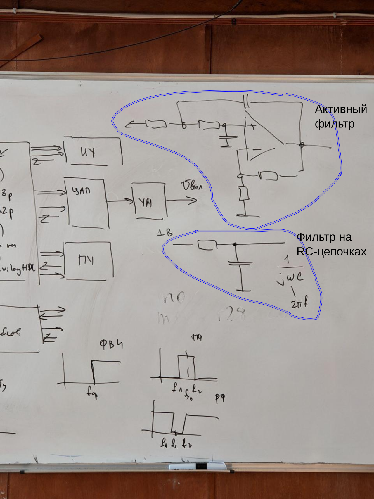
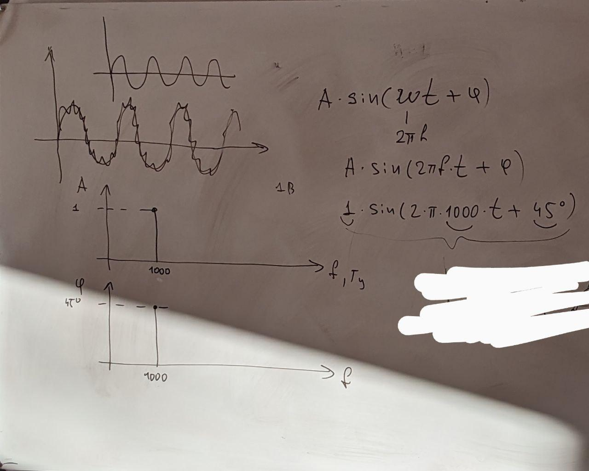

Пример чего-то (не знаю чего, рил)
Рисунок 1 - схема чего-то
ПУ - Предварительный усилитель (осуществляется предварительное усиление и нормирование сигнала)
ФНЧ - Фильтр низких частот (антиалиасный фильтр) (увеличивает соотношение сигнал/шум, ограничивает полосу пропускания частот с целью выполнения требований теоремы Котельникова(Найквиста))
АЦП - Аналого-цифровой преобразователь (предназначен для автоматического преобразования входного аналогового сигнала в эквивалентное значение цифрового кода)
Теорема Котельникова - частота дискретизации АЦП должна быть в 2 и больше раз чем частота среза ФНЧ
Основные особенности и типовые алгоритмы системы цифровой обработки сигналов (СЦОС):
Наиболее часто реализуется алгоритмы, связанные с цифровой фильтрацией и спектральным анализом

Рисунок 2 - некоторые примеры аппаратных фильтров
Преимущества цифровых фильтров и алгоритмов:
Типовые алгоритмы цифровой обработки сигналов:

Рисунок 3 - Спектральный анализ сигнала
ДЗ: посмотреть хедхантер
Программист ПЛИС
Программист DSP (Процессоров Цифровой Обработки Сигналов)